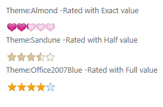

The Essential Tools rating control for ASP.NET Web provides an intuitive rating experience that allows the end-user to select a number of stars that represent a rating.
It allows displaying a numeric variable with a "star control", which is useful when creating polls or in occasions when you want the user to rate various kinds of items.
Here are some of the key features of the rating control in ASP.NET-
· Exact precision support for each rating icon (Full, Half, or exact)
· Horizontal and vertical orientation support.
· Editable and read-only mode support.
· Auto-post-back support.
· Reset button support.
· Customizable rating
· Fourteen built-in skins.
· Tool tip support
Use Case Scenarios
The Rating control is used to elegantly visualize end-users' ratings
· The user can now experience precise ratings, instead of rounded-off values
· The user can reset the rating control whenever required
· You can customize the way the rating control works, i.e.-
o The numerical data associated with each “star” control,
o The skins for each rating control,
o The way the rating icons look- this allows you to change the icon to anything else other than a star if you want to.
Appearance and Structure
The following figure gives you a basic idea of the structure and appearance of the Rating control in ASP.NET Tools-

Figure 439: Rating Control with Exact, Half, and Full precision options, along with Icon customization
 Adding Rating control to ASP.NET Tools
Adding Rating control to ASP.NET Tools